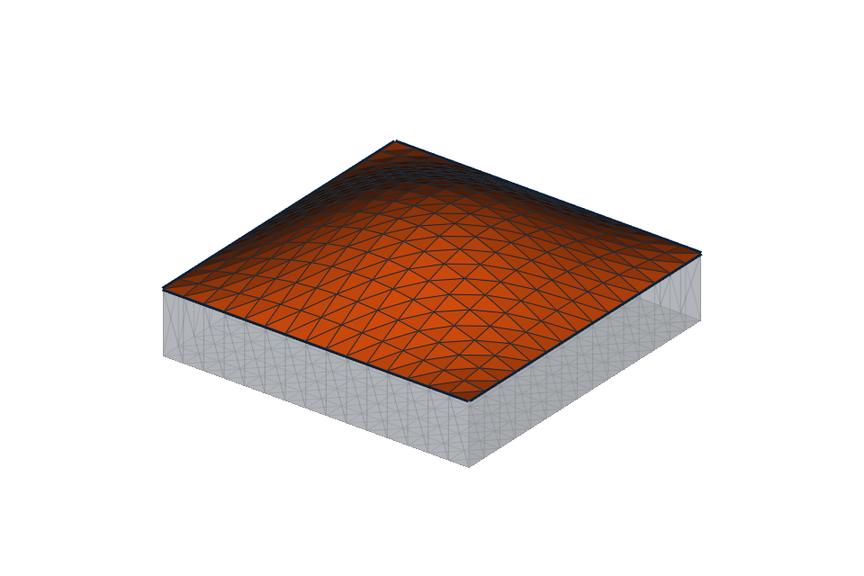
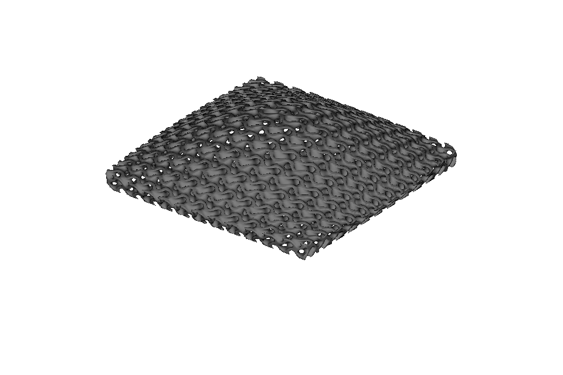
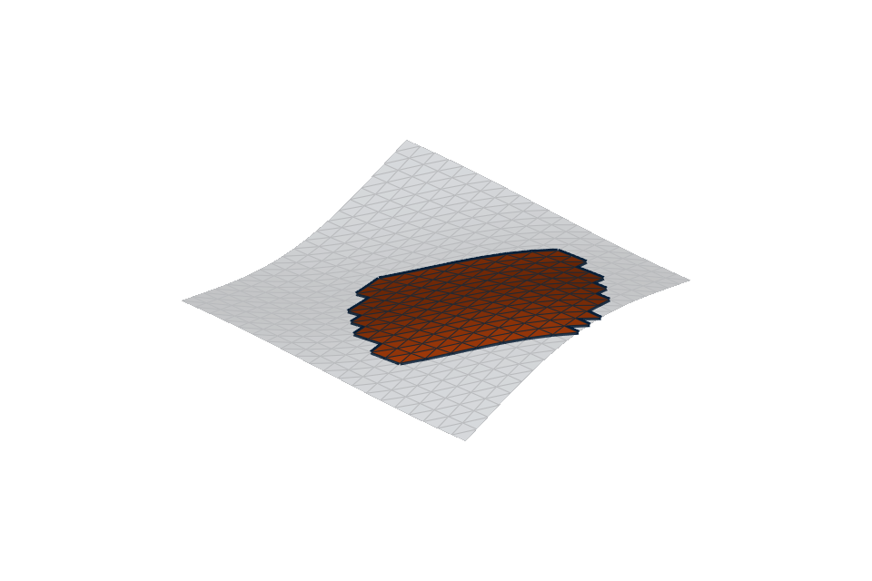

Select triangle-mesh patches#
Mesh selection turns a complete or complicated SurfaceMesh into a reusable set of triangles. It
is useful whenever the next operation applies to only part of a mesh: mapping a conformal lattice,
adding physical surface relief, assigning a region, measuring an area, or exporting a local patch.
This guide focuses on the practical selection process. The Python API contains the complete method reference, while the triangle-mesh conformal mapping guide explains chart construction and mapped lattices in depth.
The selection process#
Most workflows follow five steps:
Resolve the source mesh. Load a mesh file, construct a
SurfaceMesh, or resolve an OpenVCAD tree at an explicit voxel size.Choose a stable geometric seed. Use a point, ray, or nearest vertex instead of hard-coding a triangle ID when the source may change.
Grow the region. Follow connected triangles, stop at sharp edges or data boundaries, select by surface distance, or enclose a region with mesh-edge paths.
Inspect and refine it. Check its area and boundary, then add or remove triangle rings or make manual corrections in the interactive picker.
Convert or save it. Pass the general selection to another operation. Conformal mapping validates its stricter open-disk requirements only when you request a
TriangleMeshSurface.
MeshSelection is immutable: refinement returns a new selection and leaves the previous result
unchanged. Every result is tied to a fingerprint of the ordered source vertices and triangles. If
the mesh is translated, merged, or regenerated at another resolution, operations reject the stale
triangle IDs instead of silently selecting a different region.
Choose the method that matches the boundary#
Situation |
Useful approach |
|---|---|
One disconnected shell or scan fragment |
|
A smooth panel meeting walls at a crease |
|
A segmented or material-labelled region |
|
A local patch on a curved scan |
|
A region inside a deliberate outline |
|
An almost-correct automatic result |
|
The angle method uses the angle between each pair of neighboring triangles. It can follow gradual curvature around a dome while stopping at a sharp feature edge. Constrained growth adds marked mesh edges and per-triangle integer labels as delimiters. Labels can represent segmentation, material IDs, or any other triangle data you have reduced to region categories.
Geodesic-radius selection measures shortest distances along mesh edges rather than straight through space. This matters on folded or curved surfaces: two triangles may be close in 3D while remaining far apart when travelling over the surface. Because this distance follows the triangulation, its boundary changes when the mesh resolution changes.
Walkthrough: select a domed top for conformal mapping#
The complete example is
01_conformal_patch_workflow.py.
It starts from a closed domed tile. The target top is smooth, but it meets the side walls at a sharp
edge, so angle-limited linked selection is a natural fit.
from pathlib import Path
import pyvcad as pv
import pyvcad_metamaterials as mm
import pyvcad_rendering as viz
tile_path = Path("examples/data/3d_models/domed_tile.stl")
mesh = pv.SurfaceMesh(str(tile_path), disable_validation=True)
# Seed the top from a point above the part, then follow smooth neighboring faces.
seed = mesh.nearest_triangle(pv.Vec3(0, 0, 100))
selection = mesh.select_linked_by_face_angle(
seed_triangle=seed.triangle_id,
max_angle_degrees=30.0,
)
The seed point does not need to lie exactly on the mesh. nearest_triangle(...) returns both the
chosen triangle and the nearest surface point. A ray from a known camera or construction direction
is another useful choice:
seed = mesh.ray_intersection(
pv.Vec3(0, 0, 100),
pv.Vec3(0, 0, -1),
)
The selection reports its size and exposes the source edges around its boundary:
print(selection.triangle_count)
print(selection.area) # square millimetres
boundary = selection.boundary_edges()
{kind=link}

{kind=link}

At this point the selection is still a general triangle set. The conformal conversion is the step that requires one connected, consistently wound open disk with one boundary and no holes:
surface = selection.to_triangle_mesh_surface(
u_axis_hint=pv.Vec3(1, 0, 0),
)
cell_map = mm.cell_map_from_surface(
surface,
cells=(12, 12, 1),
height=3.0,
)
root = mm.gyroid(cell_map, wall_thickness=0.55)
viz.Render(root)
Keeping validation at conversion makes the selection tools useful for other tasks that do not need a disk. If this conversion reports a closed patch, a hole, or multiple components, inspect the boundary and refine the selection before mapping it.
Refine and inspect an automatic selection#
Grow and shrink add or remove complete edge-adjacent triangle rings:
expanded = selection.grown(rings=2)
inset = selection.shrunk(rings=1)
Shrinking is useful when the mapped feature needs clearance from a seam. Growing can recover a thin strip missed by a seed rule. These are topological operations, so their physical width follows the local triangle size rather than a fixed millimetre distance. Use geodesic radius when physical surface distance is the important control.
The
02_geodesic_patch_and_refinement.py
example creates a local disk on a wavy mesh and demonstrates ring refinement:
{kind=link}

Draw an enclosed region with mesh paths#
For a deliberate outline, snap construction points to vertices with nearest_vertex(...), join
them with shortest_surface_path(...), and combine the returned path.edges into one closed loop.
select_enclosed_region(...) then chooses the side containing a seed triangle:
first = mesh.nearest_vertex(pv.Vec3(-10, -10, 0))
second = mesh.nearest_vertex(pv.Vec3(10, -10, 0))
path = mesh.shortest_surface_path(first, second)
# Combine this path with the remaining sides of a closed outline.
boundary_edges = list(path.edges) + other_path_edges
selection = mesh.select_enclosed_region(
boundary_edges,
seed_triangle=inside_triangle,
)
The full
04_path_enclosed_region.py
example joins four paths into an outline and maps a cubic lattice inside it. The boundary must be
one connected, non-branching loop made from actual mesh edges. Use blocked_edges when a shortest
path itself must avoid a seam or forbidden edge.
Select from an OpenVCAD tree#
An implicit OpenVCAD tree has no triangles until it is resolved. Supply the voxel size explicitly:
design = pv.RectPrism(pv.Vec3(0, 0, 0), pv.Vec3(40, 40, 12))
mesh = viz.resolve_selection_mesh(design, voxel_size=0.75)
selection = viz.select_mesh_patch(design, voxel_size=0.75)
The voxel size controls both surface fidelity and triangle identity. Keep it with the saved
selection and expect to reselect or explicitly replay a geometric recipe if you change it. See
26_select_patch_from_tree.py
for a non-interactive ray-seeded version.
Practical limits#
Open and non-manifold edges delimit linked growth by default. This prevents an automatic region from leaking through ambiguous topology.
Face-angle growth is local. A gently curving surface can travel far from the seed even though no individual edge exceeds the threshold.
Shortest paths and geodesic radii follow mesh edges, so finer and more uniform triangulations produce smoother, more resolution-independent boundaries.
boundary_edges()can report several loops or non-manifold boundaries. Conformal conversion is stricter and accepts exactly one disk boundary.A changed fingerprint means triangle and vertex IDs are stale. Recreate the selection or replay a deliberately geometric recipe; do not copy old IDs onto the new mesh.
Additional runnable examples cover
triangle-region delimiters,
manual IDs,
and connected components.